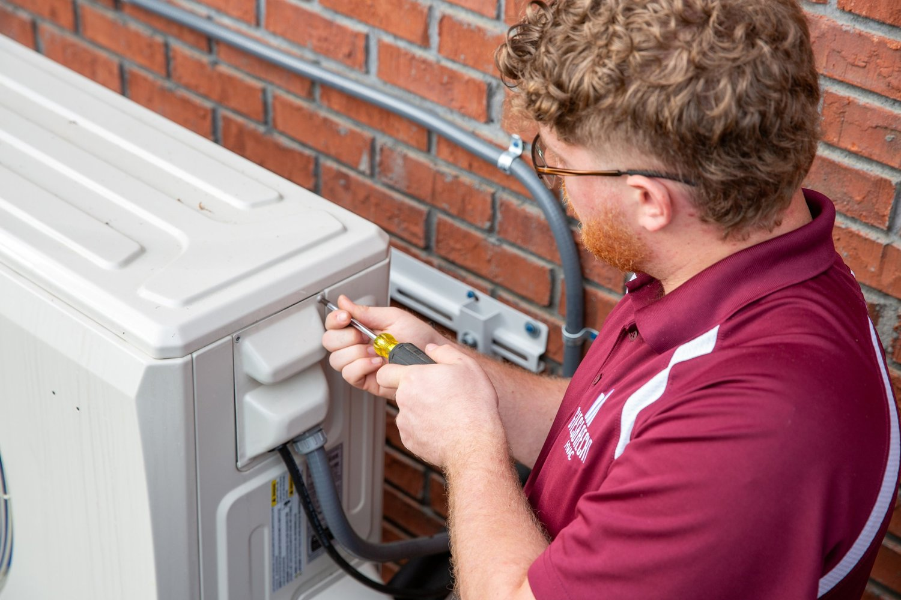
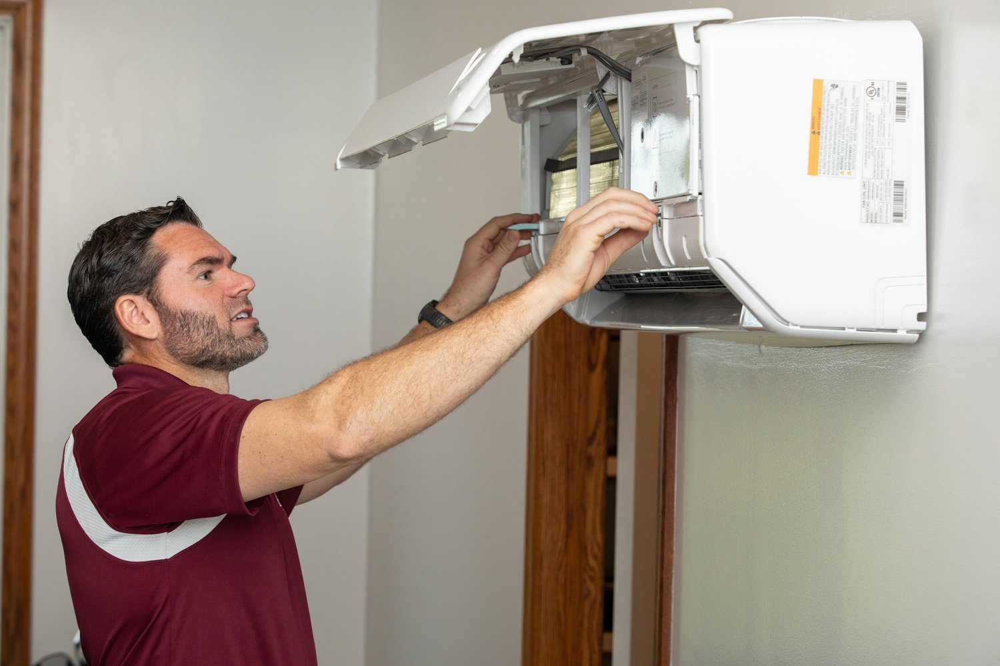

The AC runs, but the house stays warm
Long run times, weak airflow, uneven rooms, or equipment that cannot keep up with Augusta heat.
Serving Augusta, Georgia and surrounding areas
Giesbrecht HVAC helps local homeowners get answers fast for AC repair, system replacement, tune-ups, humidity issues, and indoor comfort problems.

When the house feels wrong
Long run times, weak airflow, uneven rooms, or equipment that cannot keep up with Augusta heat.
A service visit can uncover dirty coils, airflow issues, aging equipment, or settings that are costing comfort and money.
Humidity and indoor air quality problems can make a home uncomfortable even when the thermostat looks fine.
Repair, replace, or maintain? Giesbrecht gives practical guidance so you are not stuck guessing.
Why this page exists
If you clicked an HVAC ad, you probably need help now. This page keeps the path simple: explain the problem, call the local team, or request a service appointment online.
AC and HVAC services

Diagnostics, urgent cooling issues, weak airflow, strange sounds, and systems that are not keeping up.

New project proposals and equipment replacement guidance built around comfort and long-term performance.
Tune-ups, performance checks, energy-efficiency improvements, and prevention-focused service plans.
Real HVAC work
What happens next
Use the phone number for the fastest route or submit the booking form at the bottom of the page.
Warm air, weak airflow, high bills, humidity, replacement questions, or maintenance needs.
A technician can diagnose the issue and talk through the next move before you commit to major work.
Why choose Giesbrecht HVAC?
Founded in 1996, Giesbrecht HVAC brings decades of heating and air-conditioning experience to homes and businesses across Augusta and the surrounding communities.

Customer proof
"Most excellent HVAC company I have ever dealt with in over 50 years."
Randy S.
"Brian Lane was at our door within 15 minutes of making the call."
Jocelyn P.
"Their knowledge and professionalism are head and shoulders above everyone else."
Neil G.
Quick answers
Call Giesbrecht HVAC so a technician can diagnose airflow, refrigerant, equipment, thermostat, and efficiency issues.
Yes. Indoor comfort depends on both temperature and moisture. Many homes feel best when humidity stays near 45% to 55%.
Yes. This landing page focuses on Augusta, Evans, Martinez, Grovetown, and North Augusta.
Request service
Call now for the fastest path, or use the online booking form to request service.
Call (706) 826-0644